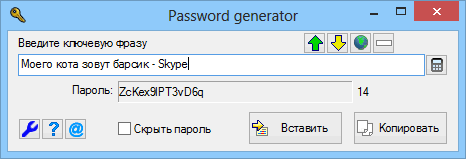

AutoIt3
GenPass
Назначение
Создаёт уникальный пароль созданный на основе ключевой фразы.

Взаимосвязанные
UniquePasswordПрограмма для создания ассоциативного пароля. Всвязи с тем, что для каждого ресурса приходится создавать индивидуальный пароль, а использование множества паролей требует программу менеджер паролей, то лучший выход в данной ситуации - ассоциативный пароль. Это пароль, который создан с использованием ключевой фразы известной только человеку создавшему пароль. Невозможно извлечь ключевую фразу из пароля, так как используется метод - "пароль к фразе является сама фраза" и программа не хранит пароля к фразе, даже исходник не поможет восстановить фразу из сгенерированного пароля. Чтобы получить ключевую фразу потребуется подобрать фразу, которая сгенерирует аналогичный пароль, но это медленный способ прямого перебора и при наличии самого пароля.
Совмещение фразы - помогает иметь одну ключевую фразу на все случаи. Например, ключевая фраза "Моего кота зовут барсик". Создаём пароль к ресурсу "forum.oszone.net" в виде "ключевая фраза + ресурс" или "Моего кота зовут барсик - forum.oszone.net", получаем пароль eg9ZcjQR60TWpX. Далее изменяем ресурс "Моего кота зовут барсик - Skype", получаем пароль tN28LJ5pcwu7EM. Даже если администратор ресурса имеет доступ к паролю (обычно это не так, в базе хранится только хеш пароля), то он не может этот пароль использовать к другим ресурсам. Важно создать свою формулу совмещения фраз, о которой было бы трудно догадаться и не использовать фразы из пары слов. Подбор фразы к паролю равносилен угадыванию числа, которое равно количеству слов русского языка (возможно в сумме с английским) умноженное на количество слов в фразе.
Рекомендуется использовать стандартные настройки, в крайнем случае изменить только набор символов использующихся для пароля, удалив из набора спец-символы, которые могут создать проблему ввода пароля на устройствах доступа не содержащих этих символов. Причина, по которой нужно принять стандартные настройки связана с тем, что если их менять при каждом новом пароле, то в дальнейшем будет непонятно с какими настройками создан пароль.
Установка лимита символов определяет длину пароля, обычно 8 или 15. Параметр "без повтора" при 1 не оставляет два одинаковых символа следующих друг за другом, при 2 символы вообще не повторяются во всём пароле.
После ввода фразы можно нажать Enter и программа вставит пароль в предыдущее активное окно, в позицию клавиатурного ввода.
Из альтернативных программ можно использовать PassPhrase - http://www.lore.ru/pass.php, именно эту программу я нашёл поиском, после того как написал версию 0.1.